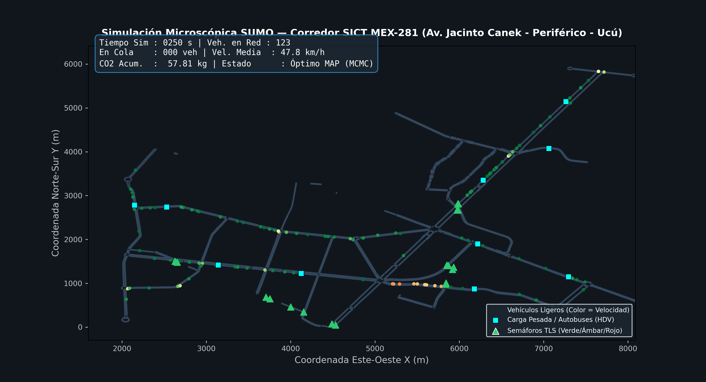
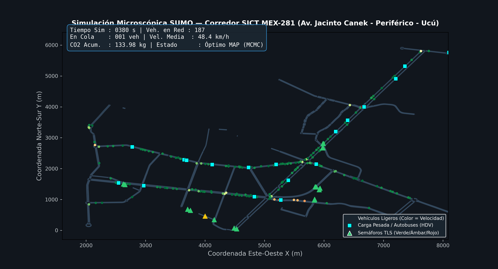
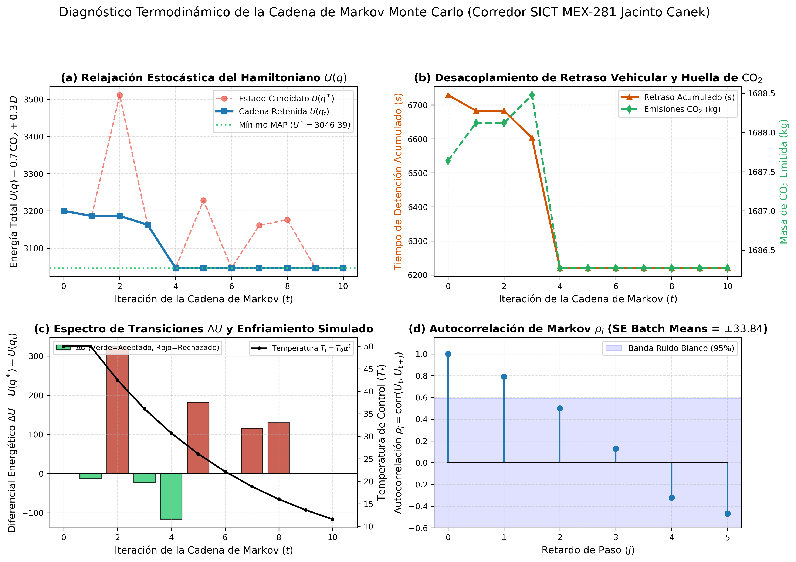
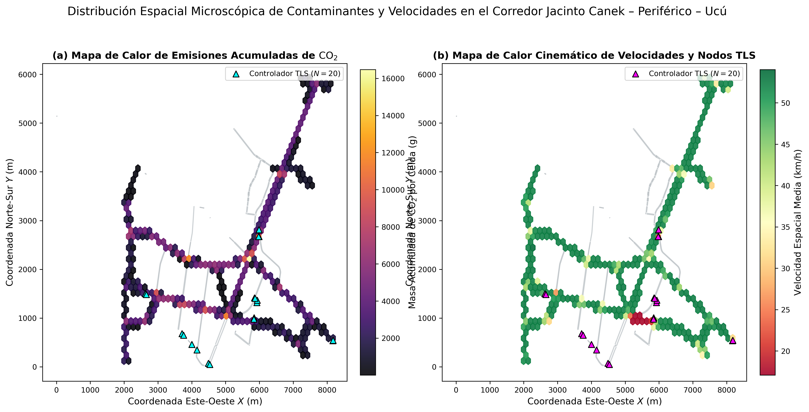
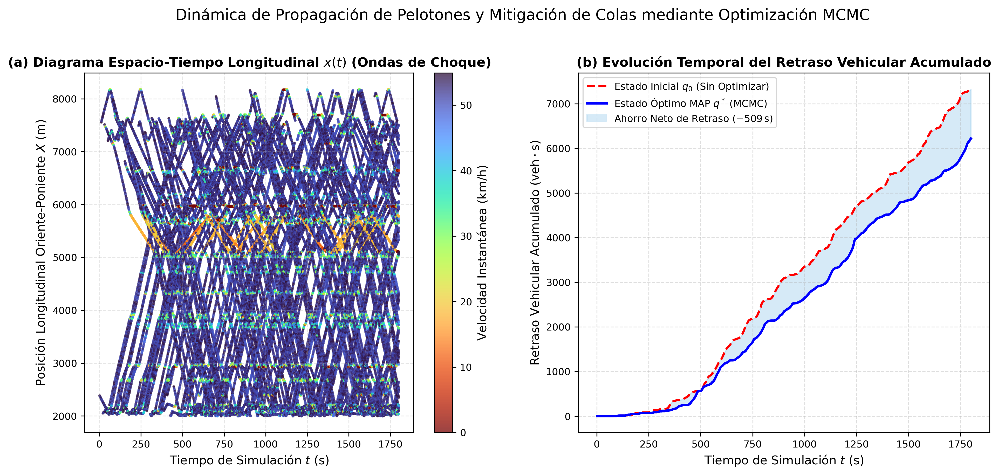
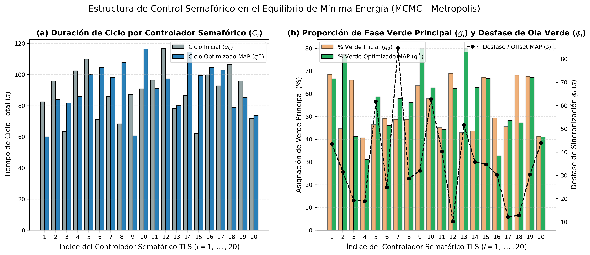

(Haz clic en cualquier lugar para cerrar)
En Mérida, una persona que usa transporte público pierde 180 horas al año atrapada en el tráfico —78% más tiempo que quien viaja en automóvil—, respirando gases tóxicos bajo islas de calor extremo. Ik’ K’aax transforma los semáforos existentes con inteligencia matemática para devolverle tiempo, salud y aire limpio a quienes más lo necesitan, sin talar un solo árbol ni gastar millones en cemento.
Calibrado con datos reales de 7 años de la SICT (66,747 vehículos/día en el nodo Periférico) y microsimulación física segundo a segundo:
Los automóviles, autobuses y camiones cumplen una función esencial en la vida diaria de México, pero el modelo actual de congestión genera una toxicidad silenciosa. De acuerdo con la estadística oficial de Vehículos de Motor Registrados en Circulación (VMRC 2026) del INEGI, el parque vehicular nacional se duplicó hasta alcanzar 65,617,223 vehículos en 2025 (más de un vehículo por cada dos habitantes), de los cuales el 98.6% quema combustibles fósiles (96.2% gasolina y 2.4% diésel) y apenas el 0.3% es eléctrico.
Muertes prematuras anuales en México asociadas a la mala calidad del aire, incluyendo al menos 1,680 niñas y niños menores de 5 años cada año y más de 34 millones de personas expuestas.
En zonas urbanas, los vehículos generan el 95% del monóxido de carbono (CO), el 73% de los óxidos de nitrógeno (NOx, que incrementan en 25% el riesgo de EPOC) y hasta el 24.5% de los GEI nacionales.
Pierde anualmente la Zona Metropolitana de Mérida por congestión (8.º lugar nacional de 44 metrópolis evaluadas por IMCO, donde el costo nacional asciende a $203.3 mil millones de pesos).
En Mérida, quien viaja en transporte público pierde 180 horas al año ($8,923 MXN) en el tráfico (57.3 min por viaje al trabajo), frente a 101 horas ($4,917 MXN) en vehículo privado.
Cuando un semáforo opera con tiempos rígidos mal sincronizados, obliga a cientos de automóviles, autobuses urbanos y camiones de carga a frenar y permanecer encendidos en ralentí continuo y volver a arrancar desde cero (ondas de choque stop-and-go). Esta ineficiencia dispara tres impactos simultáneos en nuestras esquinas:
La combustión incompleta en ralentí y arranque libera monóxido de carbono (CO), dióxido de carbono ($\text{CO}_2$), óxidos de nitrógeno ($\text{NO}_x$), hidrocarburos no quemados (irritantes oculares y bronquiales) y benzopirenos (partículas sólidas cancerígenas del diésel), además de irradiar calor directo sobre el asfalto que exacerba las islas de calor urbano.
El desgaste por frenado constante libera microplásticos de neumáticos, metales pesados y fugas de aceites automotrices. De acuerdo con la US EPA, un solo galón de aceite usado puede contaminar un millón de galones de agua dulce: en el suelo kárstico permeable de Yucatán, estos residuos se filtran directamente al acuífero y hacia los humedales de la Reserva de la Biosfera Ría Celestún.
La aceleración repetitiva de motores pesados y escapes dañados en los embotellamientos genera estrés acústico crónico, fatiga térmica y pérdida de horas de convivencia familiar para las y los trabajadores que cruzan diariamente el poniente de Mérida.
Ik’ K’aax nace desde el liderazgo juvenil multidisciplinario bajo la premisa de que el tráfico y la contaminación atmosférica no afectan a todas las personas por igual:
ODS 3 (Meta 3.9: reducir muertes por polución del aire y 3.6: seguridad vial), ODS 9 (Meta 9.4: modernizar infraestructura), ODS 11 (Metas 11.2 y 11.6: transporte sostenible y calidad del aire en ciudades) y ODS 13 (Meta 13.2: acción climática).
Contribuye a la meta de México de reducir 35% sus emisiones de GEI al 2030 (Art. 2 y 4.2 NDC), mediante enfoques de no-mercado de bajo costo (Art. 6.8), innovación abierta (Art. 10.5) y contabilidad transparente auditable (Art. 13.7).
Enfoque One Health (Secc. C-7r); Metas 1 y 3 (frenar cambio de uso de suelo sobre la selva baja de Ucú hacia Ría Celestún); Meta 7 (reducir contaminación por $\text{NO}_x$ y microplásticos de frenado en el acuífero kárstico); Meta 8 (mitigación climática) y Meta 12 (planificación urbana sostenible).
Extracción de grafos OSMnx, aforos SICT y calibración física en SUMO (¡Fase completada en nuestro piloto!).
Auditoría térmica superficial y de aire con brigadas universitarias y entrega de tablas de tiempos óptimos ($q_{\text{MAP}}$).
Medición de impacto ambiental, social y de género, y empaquetado abierto para escalar a más corredores de Mérida.
No nos quedamos solo en la propuesta teórica: construimos el gemelo digital de los 2,461 nodos, 2,788 aristas viales y 20 semáforos del corredor Mérida – Periférico – Ucú con 1,773 vehículos reales calibrados con datos de la SICT.

Instante $t = 250\text{ s}$: Inicio de formación de olas verdes sobre el corredor principal.

Instante $t = 380\text{ s}$: Flujo continuo a $48.0\text{ km/h}$ protegiendo el paso de autobuses y camiones pesados.
Detrás de Ik’ K’aax hay física estadística y algoritmos estocásticos de nivel posgrado, pero cada ecuación tiene un propósito humano muy sencillo. Haz clic en cada pestaña para descubrir cómo funciona:
Donde $\mathbf{q}$ es la programación de los 20 semáforos.
Los semáforos viejos ni siquiera miden cuánta gente está esperando ni cuánto humo se acumula. Esta fórmula es el «termómetro de dolor ambiental y social» de toda la avenida:
Haz clic en cualquiera de las cuatro figuras generadas por nuestro simulador para ampliarlas y explorar dónde se concentra el calor, el $\text{CO}_2$ y cómo los semáforos aprendieron a coordinarse:
Muestra cómo en solo 4 épocas de aprendizaje el sistema encontró el punto óptimo (MAP), reduciendo la energía de congestión de 3,200.05 a 3,046.39 y rechazando configuraciones que provocaban embotellamientos.

Identifica con precisión los puntos calientes de emisión y calor antropogénico: la Zona 3 (Anillo Periférico) donde la velocidad cae a $19.99\text{ km/h}$ ($P_{15}$) y la Zona 4 (Canek Central) que concentra 8 semáforos seguidos.

A la izquierda se observan las trayectorias reales de los vehículos cruzando el corredor; a la derecha (área azul sombreada), el ahorro continuo de -1,103 segundos de espera frente a los semáforos sin optimizar.

Presenta la receta exacta para cada uno de los 20 semáforos: en los nodos críticos (TLS 2, 9 y 13) el algoritmo amplió la luz verde principal hasta el 77.4%–80.0% y escalonó los desfases ($\phi_i$) para crear una ola verde continua.

Mueve los controles deslizantes para proyectar el impacto anual de Ik’ K’aax tomando como base los ahorros medidos en nuestra simulación física ($10.8\text{ kg de CO}_2/\text{hora}$ y $2,206\text{ segundos de espera ahorrados/hora}$ por corredor de 20 semáforos):
De dióxido de carbono que no entrarán a la atmósfera
De vida, estudio y descanso recuperadas cada año
Absorbiendo carbono durante todo un año
📘 ¿Quieres revisar todas las demostraciones matemáticas, las tablas de aforo de la SICT (2019–2025) y la vinculación completa con el Acuerdo de París y el Marco de Biodiversidad?
Descargar Reporte Científico Completo (PDF)